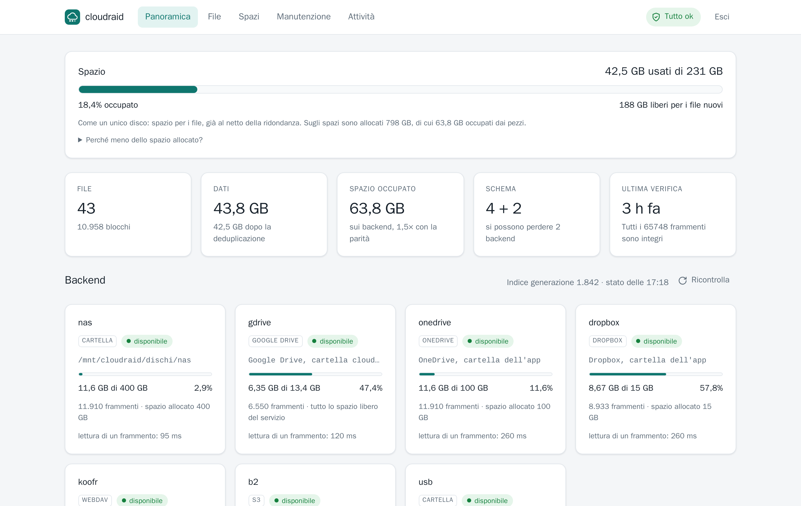
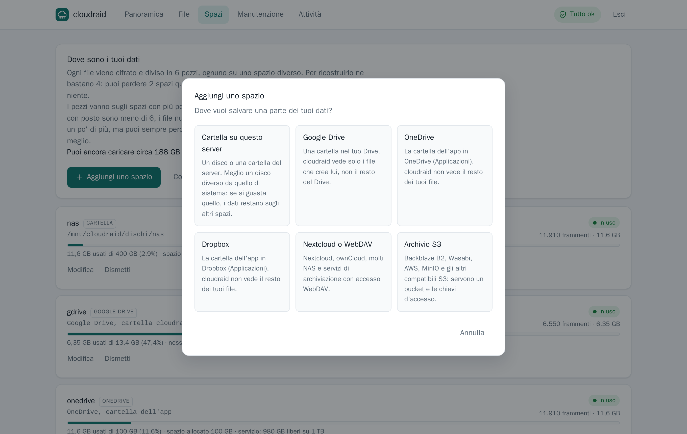
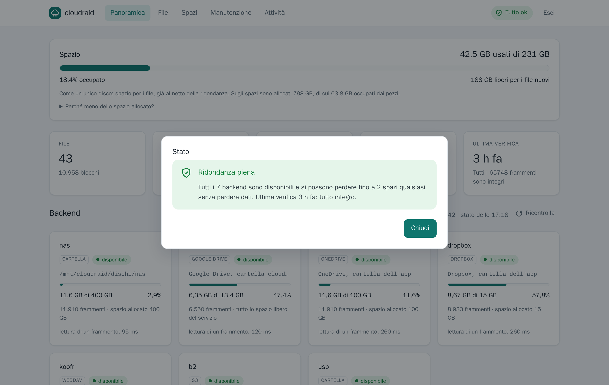
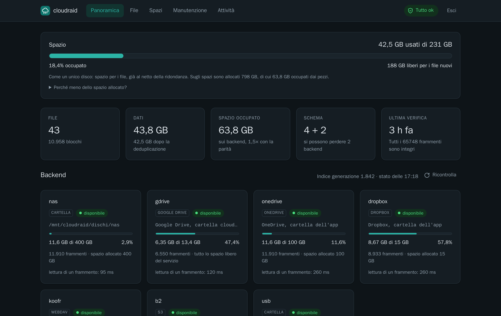
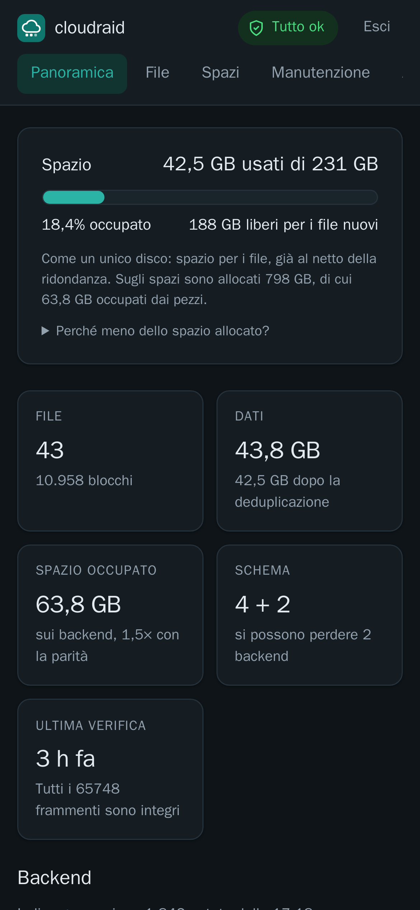
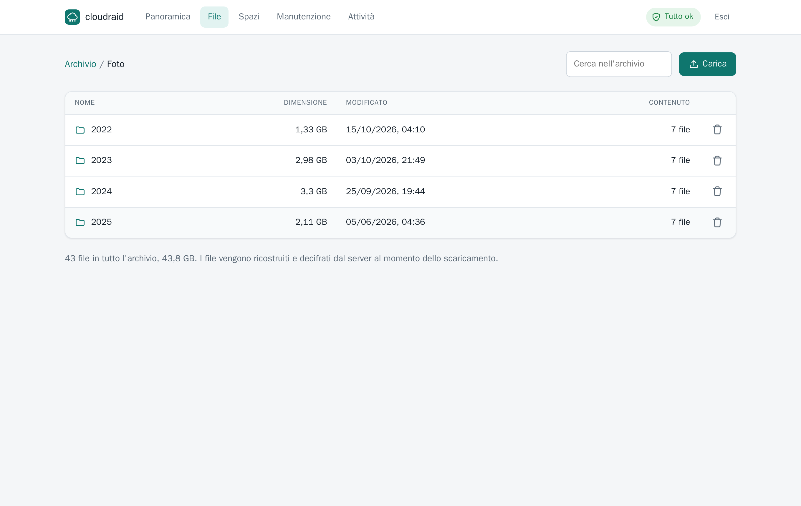
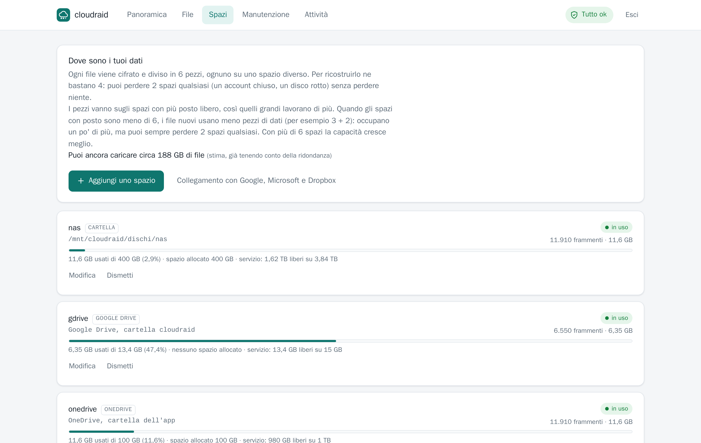

cloudraid cifra ogni file, lo divide in sei pezzi e li sparge su Google Drive, OneDrive, Dropbox, Nextcloud, S3 e i tuoi dischi. Ne bastano quattro per ricostruirlo: puoi perdere due spazi qualsiasi (un account chiuso, un disco rotto, un servizio che sparisce) senza perdere niente.

Un unico binario Rust: parla direttamente con i servizi cloud, senza rclone né altri programmi. Si installa con Docker in pochi minuti.
XChaCha20-Poly1305, chiave protetta da Argon2id, impronte BLAKE3 su ogni pezzo. Le credenziali dei servizi sono cifrate anche loro.
Schema 4 + 2 con Reed-Solomon: si perdono due spazi qualsiasi. E mai più di due pezzi di un blocco sullo stesso disco fisico.
Legge lo spazio libero di ogni servizio e mette i pezzi dove c'è posto: 2 GB di Dropbox e 1 TB di OneDrive lavorano insieme.
Il repository si monta con FUSE: copi i file con cp o rsync e cloudraid li cifra, divide e distribuisce in automatico.
Panoramica, file, spazi e manutenzione in italiano. Aggiungere Google Drive o Dropbox è una procedura guidata, anche dal telefono.
Misura la velocità di ogni servizio e scarica i pezzi dai più rapidi; se uno rallenta, chiede un pezzo in più a un altro.
Verifica dei pezzi, riparazione dalla parità, ribilanciamento, dismissione di un account senza perdere ridondanza, pulizia degli orfani.
Blocchi a lunghezza variabile (FastCDC): i contenuti uguali si salvano una volta sola, anche fra file diversi.
Ogni servizio con il suo protocollo nativo, implementato in cloudraid. I piani gratuiti si sommano: con qualche account gratis hai già decine di GB protetti.
Con Google Drive cloudraid usa solo l'autorizzazione drive.file: vede soltanto i file che crea lui. Con Dropbox e OneDrive, solo la propria cartella dell'app.
Schermate dell'interfaccia vera, con dati dimostrativi.






Serve un server Linux con Docker. Si parte con due cartelle locali e si aggiungono gli account cloud dall'interfaccia web.
Le istruzioni passo passo per ogni servizio, comprese le quote gratuite, sono nella guida ai servizi.
# scarica e costruisci
git clone https://github.com/teopost/cloudraid.git
cd cloudraid && make build
# configurazione di partenza
cp .env.example .env
install -d -m 700 config
cp cloudraid.example.toml config/cloudraid.toml
# crea il repository (chiede la password) e avvia l'interfaccia
./cloudraid init
docker compose up -d web
# poi: https://<server>:8443/ → Spazi → Aggiungi uno spazioNo. Ricevono solo pezzi cifrati, e di norma ogni servizio ha un solo pezzo di ogni blocco. Senza la chiave, che resta sul tuo server protetta dalla tua password, sono dati illeggibili.
Niente di grave: i file si leggono dagli altri spazi. Aggiungi un nuovo spazio, premi "Verifica e ripara" e i pezzi mancanti vengono ricostruiti dalla parità e salvati lì.
Sì. cloudraid legge lo spazio libero di ogni servizio (o quello che allochi tu) e distribuisce i pezzi di conseguenza. La panoramica mostra quanto puoi ancora caricare, già al netto della ridondanza.
È un archivio ridondante, non un backup con versioni: se cancelli un file, è cancellato ovunque. Ha senso affiancarlo a un backup tradizionale, oppure usarlo come destinazione dei backup.
Di un server Linux con Docker (anche un mini PC), di almeno sei spazi (cartelle, dischi o account cloud) e, per Google, Microsoft e Dropbox, di registrare l'app una volta sola presso il servizio: l'interfaccia ti guida passo passo.